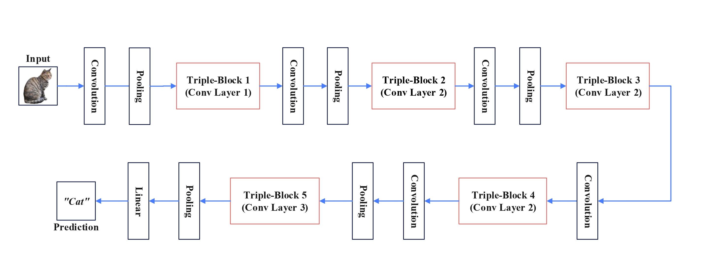
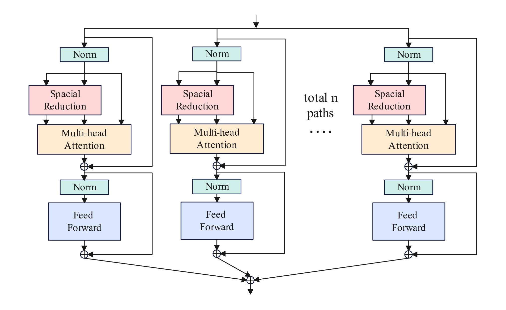
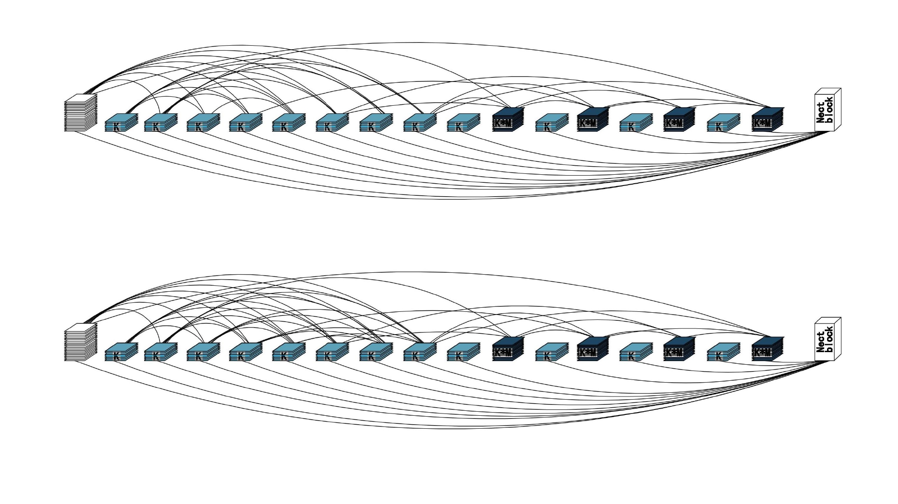
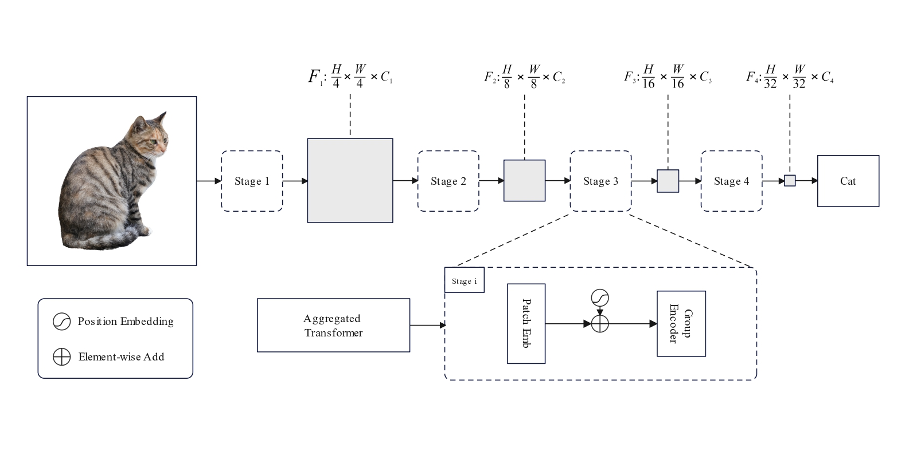
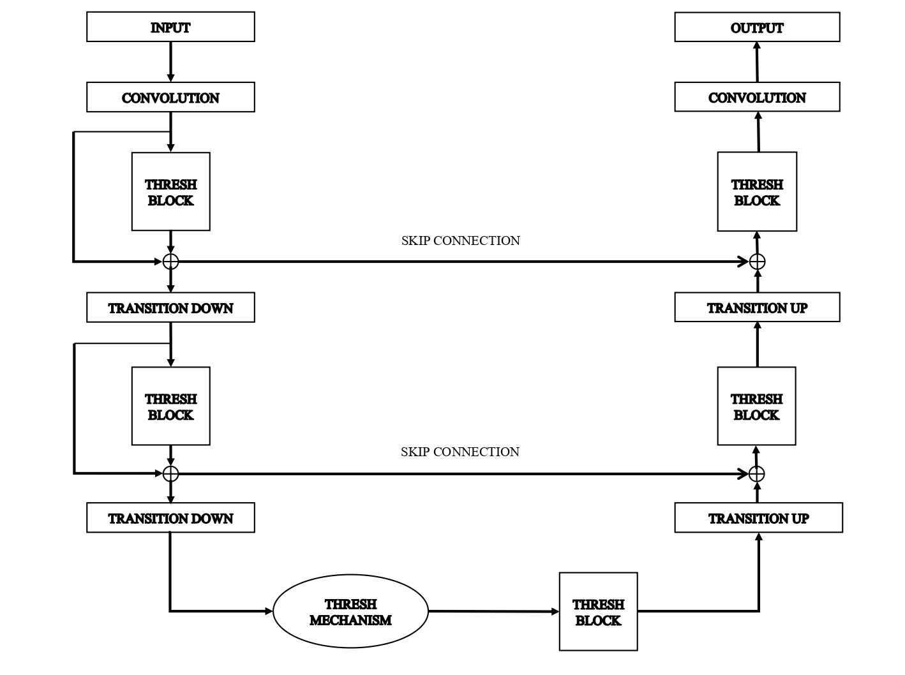

Rui-Yang Ju
 |
Rui-Yang Ju 鞠睿陽 |
About Me
I am currently (2019-present) studying in Department of Electrical and Computer Engineering (ECE)
from Tamkang University (TKU).
Since 2020, I have entered the digital image processing laboratory to conduct computer vision research,
advised by Prof. Jen-Shiun Chiang.
I am preparing to apply for PhD and am looking for a supervisor. If you are interested in me, please contact me and I will send you my research proposal.
Research
- Computer Vision (Image Classification, Object Detection, Semantic Segmentation)
- Deep Learning (Convolution Neural Network, Self-Attention Mechanism)
- Embedded System (Edge Computing Platform, Raspberry Pi)
Professional Memberships
- IEEE Student Member
- IET Student Member
Journals

|
Efficient Convolutional Neural Networks on Raspberry Pi for Image Classification. |

|
ThreshNet: An Efficient DenseNet using Threshold Mechanism to Reduce Connections. |
Conferences
 |
TripleNet: A Low-Parameter Network for Low Computing Power Platform. |
 |
Aggregated Pyramid Vision Transformer: Split-transform-merge Strategy for Image Recognition without Convolutions. |
 |
New Pruning Method Based on DenseNet Network for Image Classification. |
Projects
 |
Attention and Transformers in Vision. |
 |
Improved Semantic Segmentation Network. |
Patents
- Automatic vacuum loading device. Taiwan Patent, Utility Model No.M595589 (2020) [Certificate]
- Automatic storage cigarette case. Taiwan Patent, Utility Model No.M576794 (2019) [Certificate]